完整路演版
组合的诞生：先讲过程，再看结果
路演按组合研究的真实推进顺序展开：从三核原型、可投化、风控试错，到四核水库与实盘组合。失败实验保留下来，是为了让投资框架的取舍可审计。
三核原型
先用股、债、商三核解决收益来源。
普林格模型决定大类资产权重，股票端从沪深300升级为高景气 TOP4 行业，债券/现金端用可转债替代，商品端保留南华商品暴露。
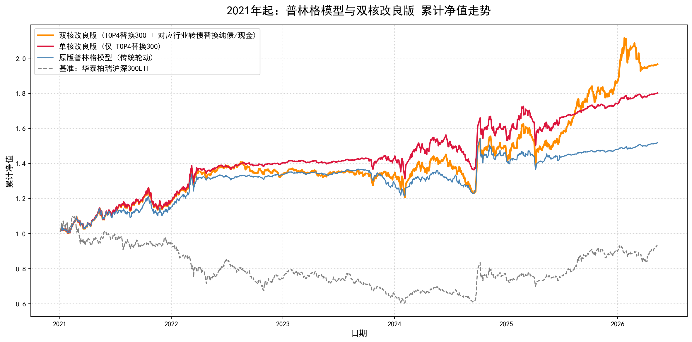
早期矛盾
收益上去了，回撤问题也被放大了。
早期三核版本已经显著优于大盘和原版普林格，但最大回撤仍然是组合进一步进化的主要约束。
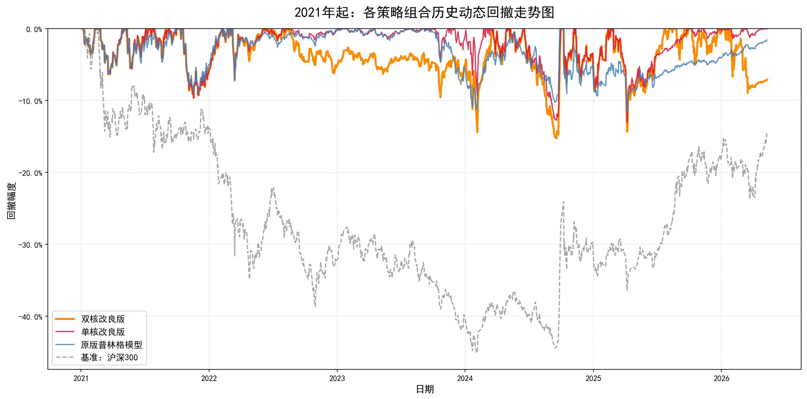
拼接 2021 年前数据
研究从 2021 年样本扩展到 2016-2026 全区间。
早期文档的第二段重点是把 2021 年前的数据接上：前期用沪深300、中证转债、南华商品做可回溯代理，后期切换到景气行业与实操标的。
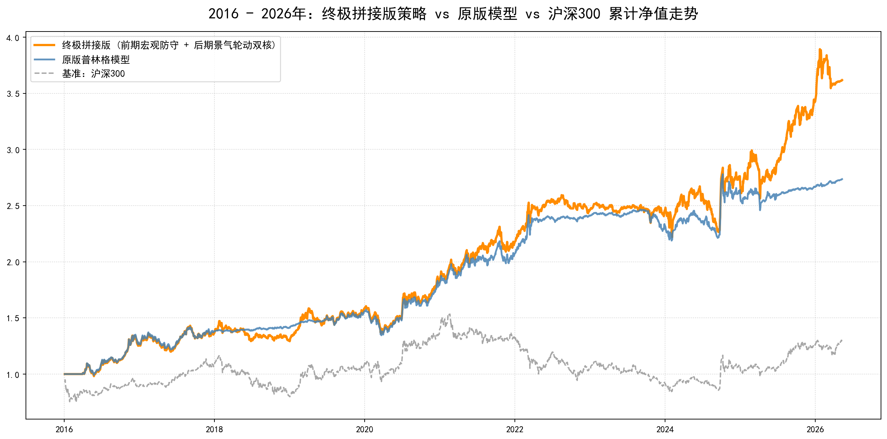
年度收益率对比
十年长跑不能只看终点，也要看每一年怎么赢。
拼接版在多数年份保持正收益，尤其在沪深300承压的 2018、2022、2023 年明显更稳。年度柱状图把“穿越周期”从一句结论变成可逐年检验的证据。
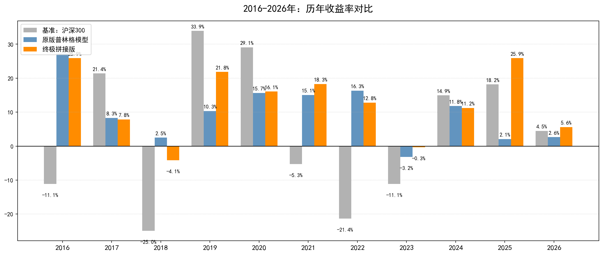
转债防守端简化
细分行业转债并不一定值得复杂化。
Step 12 对比了高景气细分行业可转债与全区间中证转债指数，目的是判断防守端是否需要做得很细。
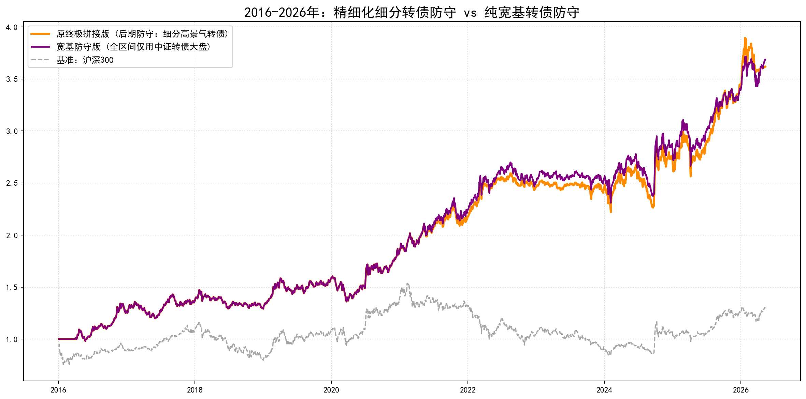
商品端从不可投到可投
南华商品指数需要替换成真实 ETF 篮子。
商品端用大成有色、华安黄金、建信能化、华夏豆粕四只 ETF 等权替代南华商品指数，牺牲一点理论收益，换来可执行性。
| 版本 | 年化收益率 | 最大回撤 | 解释 |
|---|---|---|---|
| 理论原版（南华商品） | 14.50% | -14.50% | 商品端使用指数，理论性更强。 |
| 实操落地版（四只 ETF 等权） | 13.43% | -14.17% | 收益略降，但可投资性显著提升。 |
股票端控制变量
TOP4 景气行业确实贡献了股票端超额。
在债券和商品都保持一致的情况下，仅替换股票端，TOP4 景气行业组合显著优于沪深300版本。
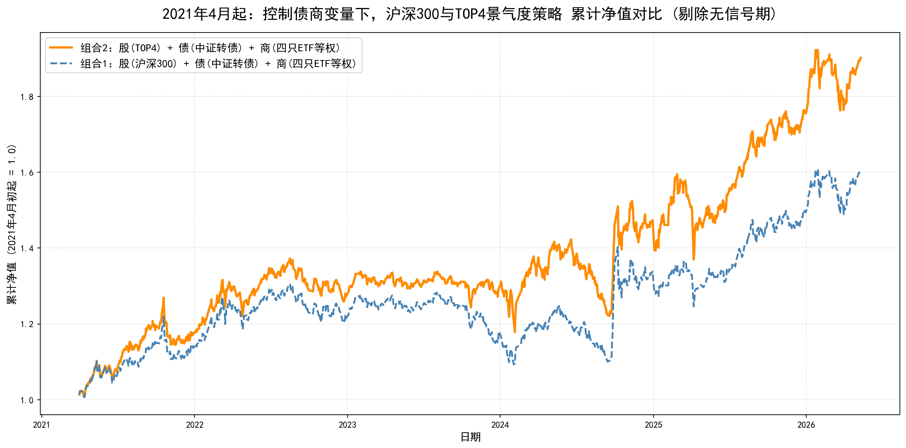
三核模型初具雏形
可落地三核版本完成十年长跑。
股债商三核落地为：行业景气 TOP4、中证转债、四只商品 ETF 等权，并与原版普林格和沪深300基准对比。
| 策略版本 | 十年期年化收益 | 全区间最大回撤 | 期末总净值 |
|---|---|---|---|
| 终极无缝拼接版（可实操落地） | 13.81% | -15.19% | 3.630 |
| 理论原版普林格 | 10.63% | -14.55% | 2.736 |
| 沪深300基准 | 2.78% | -45.10% | 1.314 |
十年收益归因
三核不是单一资产押注，而是多引擎接力。
2016-2026 的归因显示，股、债、商都有绝对贡献，商品端贡献最高。这解释了为什么组合最初选择三核结构。
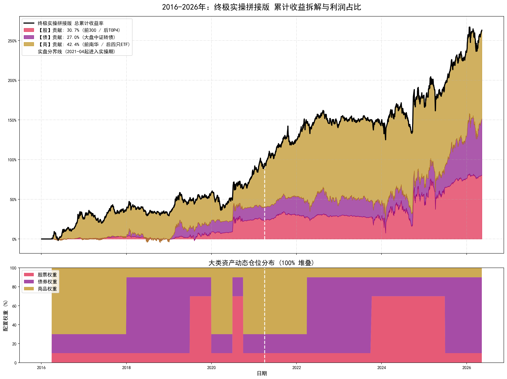
聚焦后五年实盘复刻期
剥离早期模拟后，后五年仍然跑得通。
2021Q2 之后，组合进入更接近实操的阶段。股、债、商贡献接近均衡，说明模型不是靠历史拼接硬撑出来的。
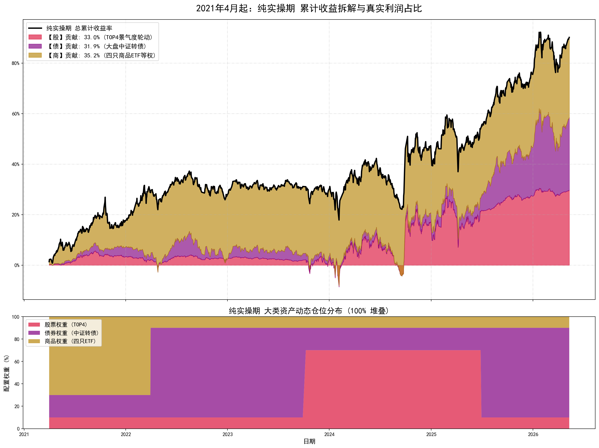
固定止损失败
固定止损看起来干脆，实际伤害修复能力。
8% 固定止损释放资金给转债和商品，最大回撤只小幅改善，年化收益却大幅下降。
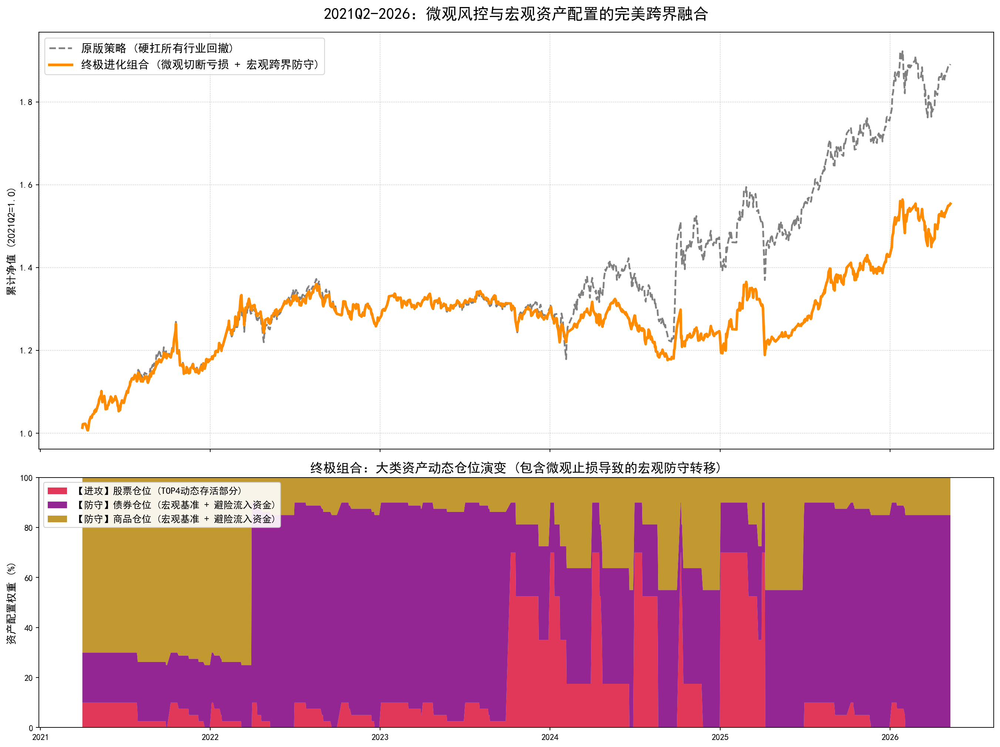
动态接回修复
只止损不够，还必须解决“什么时候回来”。
Step 21 加入 20 日线动态接回，修复踏空问题，但收益和回撤仍然不如后来的 MA20 双向风控。
| 策略架构 | 最终净值 | 年化收益率 | 最大回撤 | 夏普 |
|---|---|---|---|---|
| 原实操期组合 | 1.891 | 13.28% | -14.17% | 0.73 |
| 动态接回组合 | 1.697 | 10.91% | -13.70% | 0.60 |
MA20 双向风控出现
MA20 成为第一条真正有效的生命线。
相比固定止损，MA20 同时解决逃逸和接回：跌破撤退，收复上车。它把收益和回撤重新拉回均衡。
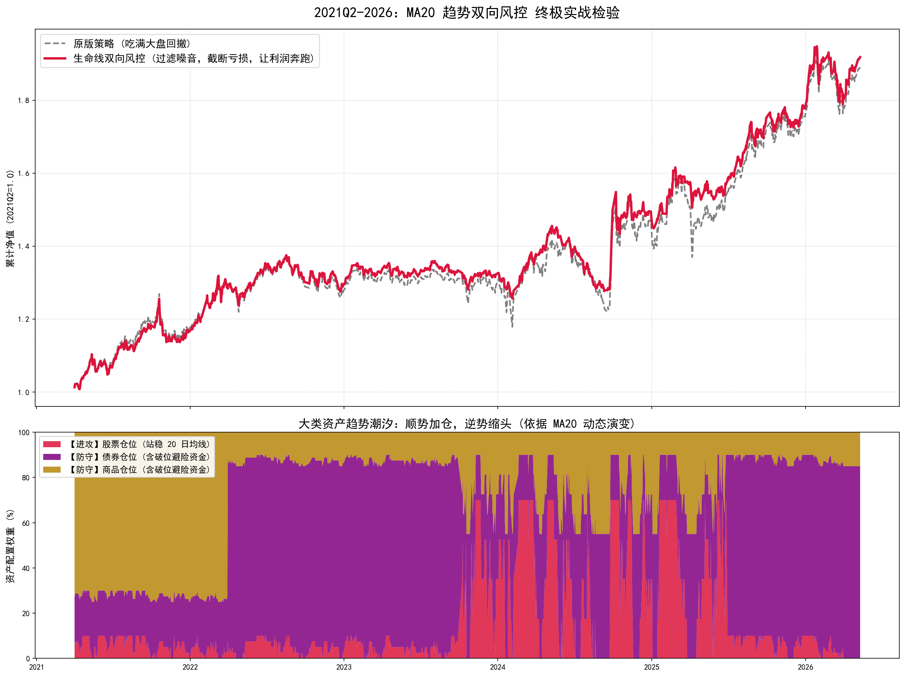
等权 vs 风险平价
风险平价能改变形状，但不是主矛盾。
风险平价改变了行业内部权重，但最终绩效与等权接近，说明问题不在内部配权的精细程度。
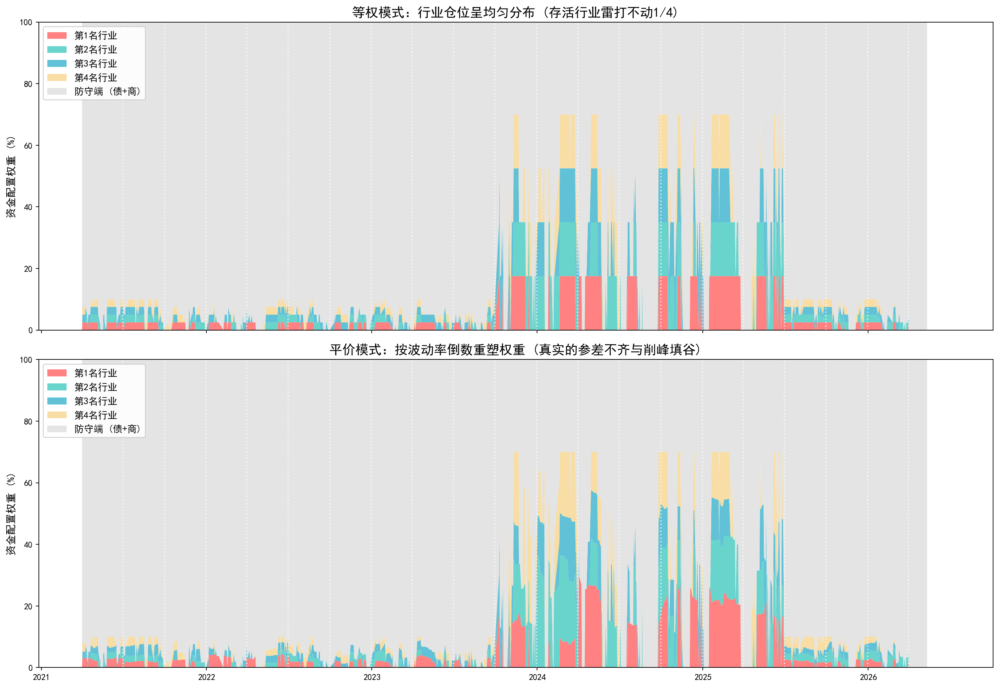
三核避险版评测
累计收益和超额收益都清楚拉开。
三核避险版与沪深300放在同一时间轴上比较，累计收益持续领先，超额收益长期保持在正区间。它证明 MA20 双向风控不只是降低波动，也在实操期形成了稳定的相对优势。
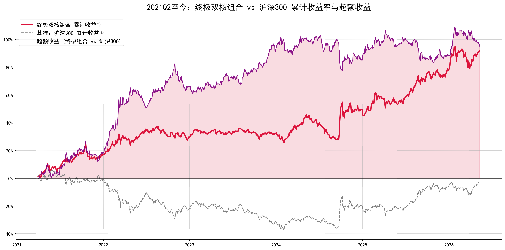
年度绝对收益能力
MA20 避险版的意义，是弱市也尽量有正收益。
2021Q2 之后的单年度对比显示，组合在 2021、2022、2023 三个沪深300负收益年份仍保持正收益。它不是单纯追涨的股性组合，而是在风险资产切换中争取年度收益的连续性。
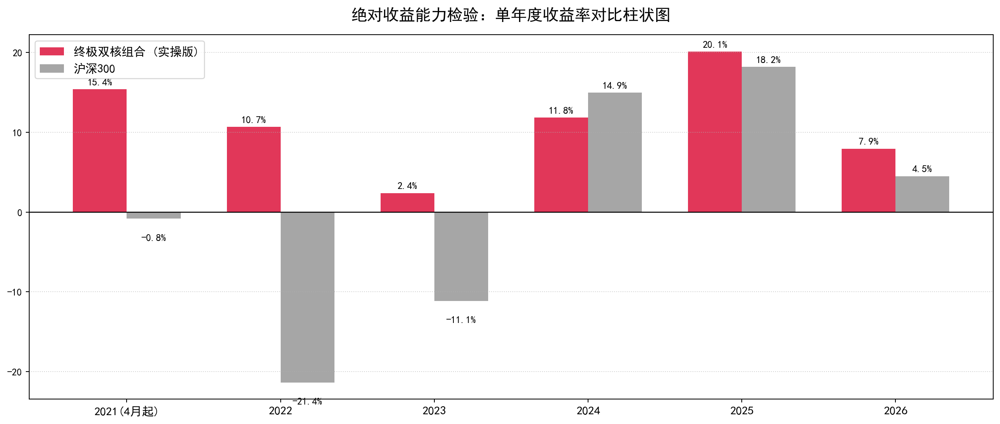
交易降频实验
简单降低频率，会损失防守质量。
日频、周频、月频对比后，周频和月频确实更省心，但收益和回撤都弱于日频 MA20。
| 频率实验 | 最终净值 | 年化 | 最大回撤 | 夏普 |
|---|---|---|---|---|
| 原组合 | 1.891 | 13.28% | -14.17% | 0.73 |
| 日频 MA20 | 1.920 | 13.62% | -12.29% | 0.89 |
| 周频风控 | 1.722 | 11.22% | -12.93% | 0.70 |
| 月频风控 | 1.627 | 10.00% | -16.58% | 0.61 |
海龟交易法止损
海龟法没有打败日频 MA20。
快系统、持仓流水、周频海龟与 MA20 对比都被测试。结果显示，海龟法可以减少一些回撤，但收益和稳定性不如 MA20。
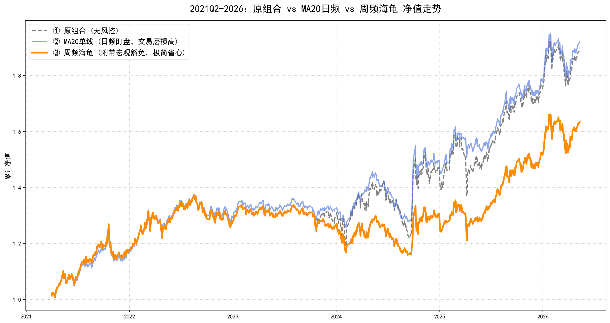
股票端整体 MA20
把 TOP4 从“各自为战”拧成一条组合净值线。
每个行业独立 MA20 太碎。改用 TOP4 合成净值后，交易信号明显下降，绩效几乎不损失。
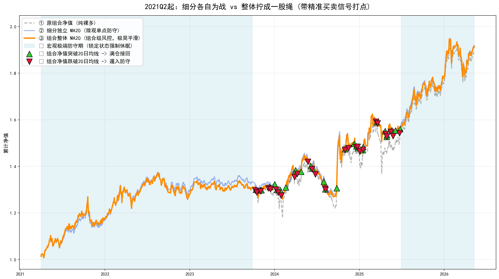
持仓复盘与审计
组合不只要有净值，还要解释每一天持有什么。
Step 32 将每日持仓压缩成区间账单，Step 33 用甘特图与仓位堆叠图展示真实持仓状态。
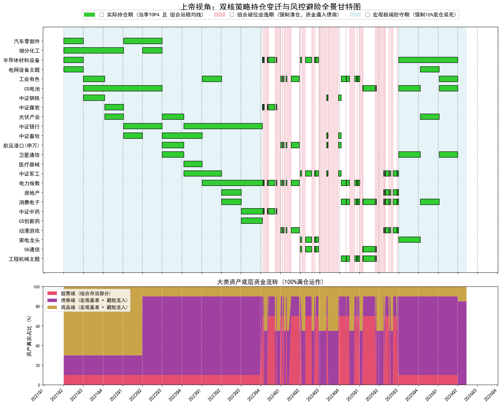
收益贡献拆解
组合整体 MA20 版本仍是股、债、商接力。
大类资产累计贡献和年度贡献被拆开，说明三核结构并没有失去收益解释力。
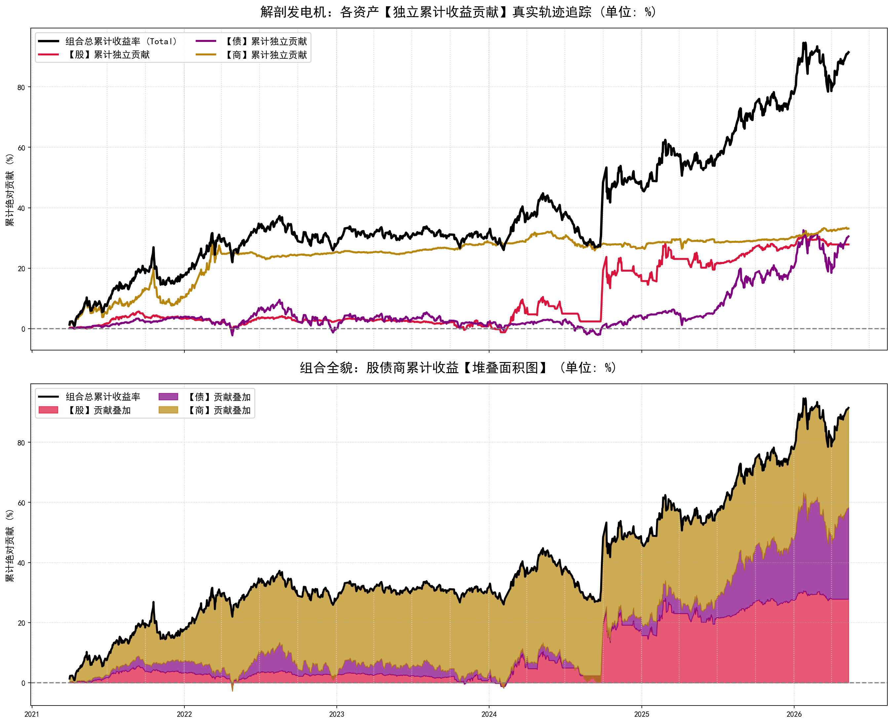
年度归因拆解
年度收益的关键，不是某一核永远领先，而是三核接力。
年度归因图把组合收益拆成股票、转债、商品三端。2021 和 2022 年商品端承担主要贡献，2024 年股票端接力，2025 年转债端贡献突出，说明三核结构的核心价值是跨年份分散收益来源。
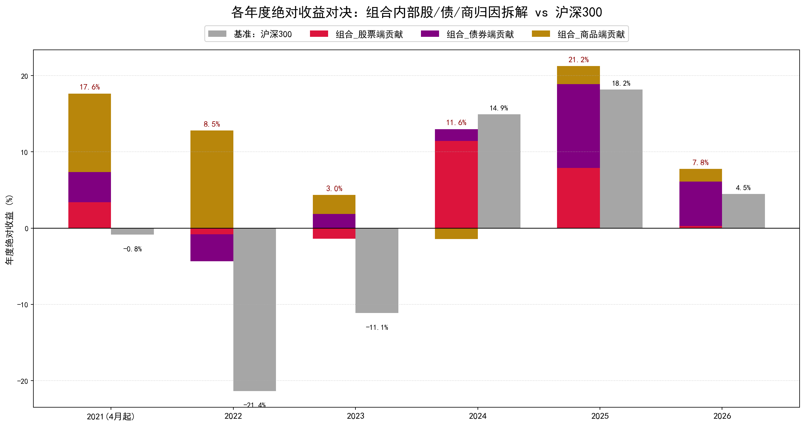
十年压力测试
长周期回测给了当头一棒：MA20 失效了。
把系统放到 2016-2026 全区间后，普林格底座加 MA20 逃逸的最大回撤反而更差。
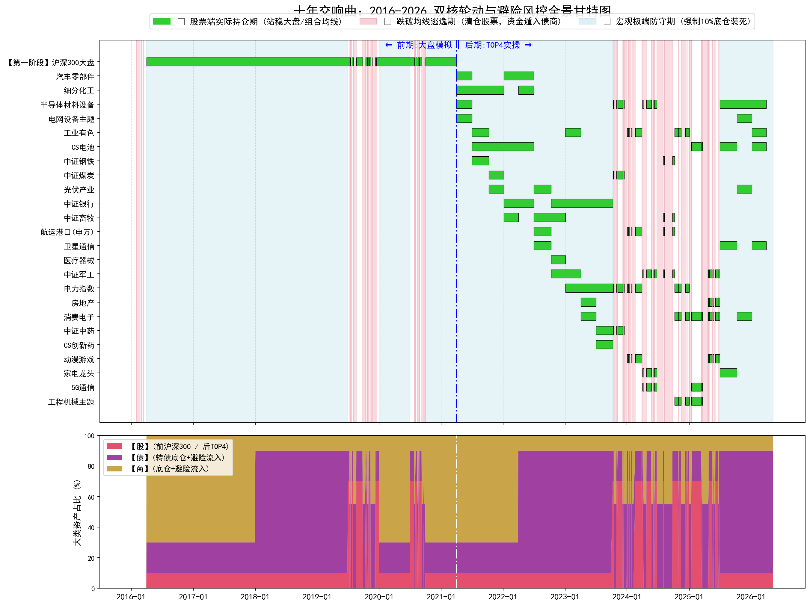
防抖带与动态波动率
加缓冲带不是答案。
1.5% 容错、防抖带、动态波动率都试过了，结果只是小修小补，没有改变长周期回撤结构。
| 方案 | 年化收益 | 最大回撤 | 夏普 | 卡玛 |
|---|---|---|---|---|
| 无均线避险 | 13.81% | -15.19% | 0.86 | 0.91 |
| 1.5% 缓冲区 MA20 | 12.47% | -16.35% | 0.80 | 0.76 |
| 1.5倍动态波动率防抖 | 12.86% | -17.64% | 0.83 | 0.73 |
时间过滤器
等 3 天确认，也只是让信号更迟钝。
3 日确认可以减少假突破，但没有从结构上解决回撤。信号更“稳”不等于组合更安全。
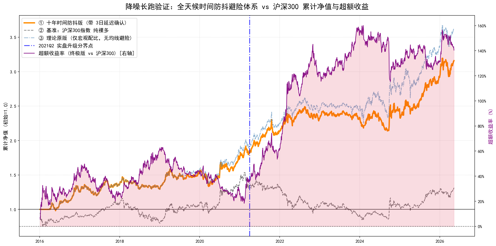
仅对 70% 主引擎启动
只在重仓时防守，思路更简洁，但仍未解决根因。
定向风控把防守动作集中在宏观配置 70% 的主引擎上，减少无意义动作，但结果与全时段 MA20 接近。
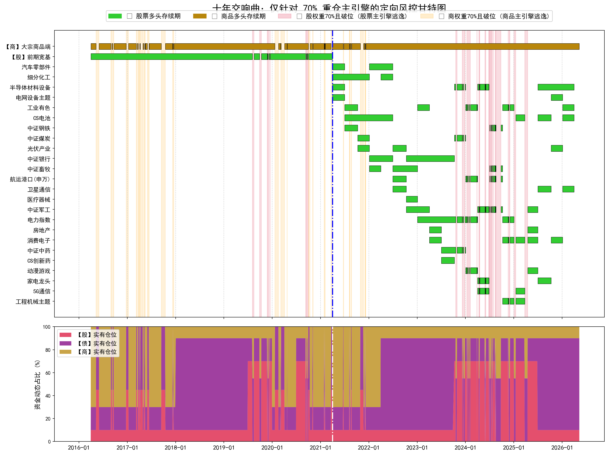
商品端也要风控吗
股商双防守增加了动作，但没有压住回撤。
仅股票避险和股商双避险都测试过。当避险资金仍在转债和商品之间流转时，扩大防守范围并没有解决问题。
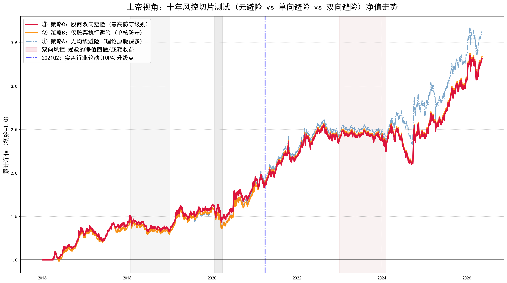
四核诞生
真正的突破：给逃逸资金一个独立水库。
当股票或商品跌破 MA20，释放资金不再分给转债或商品，而是 100% 进入纯债水库。四核防御形态由此诞生。
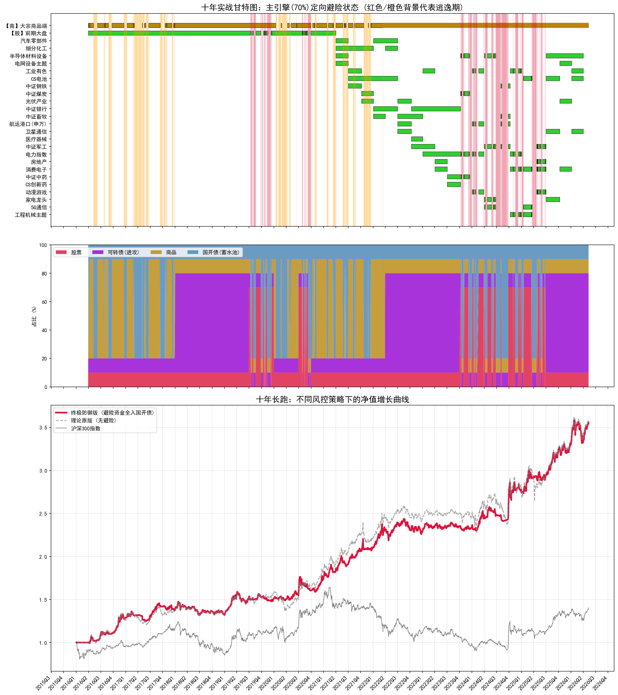
收益与回撤再拆解
四核水库把风险结果改出来了。
年度收益归因加入纯债水库后，四类资产角色被完整拆开；水下图显示最大回撤明显变浅。
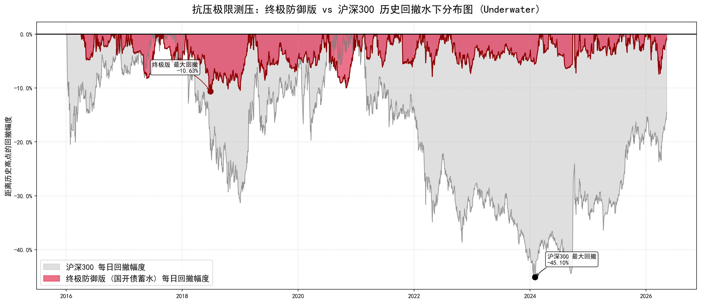
四核年度收益检阅
水库的价值，要落到年度体验上。
四核防御版在十年自然年度中只有 2018 年小幅亏损，且在 2022、2023 这类基准大幅承压年份仍保持正收益。年度柱状图说明，纯债水库改善的不只是最大回撤，也改善了投资者逐年持有的体验。
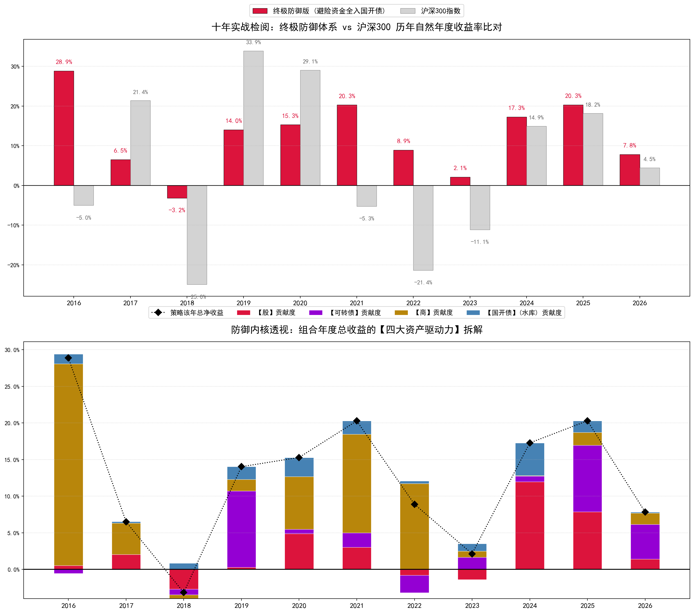
四核持仓审计
2025 年以后，水库动作要按真实区间复盘。
持仓审计把每日信号压缩为可核验的资金区间。2025 上半年，股票风控反复触发，国开债水库从底仓 10% 升至 80%，承接股票撤退释放的 70% 风险资金。
| 持仓区间 | 天数 | 股票 | 转债 | 商品 | 国开债 | 区间状态 |
|---|---|---|---|---|---|---|
| 2025.01.02-01.14 | 9 | 0% | 10% | 10% | 80% | 股票撤退，国开接盘 +70% |
| 2025.01.15 | 1 | 70% | 10% | 10% | 10% | 股票恢复 70%，水库安静 |
| 2025.01.16 | 1 | 0% | 10% | 10% | 80% | 股票撤退，国开接盘 +70% |
| 2025.01.17-03.13 | 34 | 70% | 10% | 10% | 10% | 股票恢复 70%，水库安静 |
| 2025.03.14 | 1 | 0% | 10% | 10% | 80% | 股票撤退，国开接盘 +70% |
| 2025.03.17-03.19 | 3 | 70% | 10% | 10% | 10% | 股票恢复 70%，水库安静 |
| 2025.03.20-03.31 | 8 | 0% | 10% | 10% | 80% | 股票撤退，国开接盘 +70% |
| 2025.04.01-04.21 | 14 | 0% | 10% | 10% | 80% | 股票撤退，国开接盘 +70% |
| 2025.04.22-04.24 | 3 | 70% | 10% | 10% | 10% | 股票恢复 70%，水库安静 |
| 2025.04.25 | 1 | 0% | 10% | 10% | 80% | 股票撤退，国开接盘 +70% |
| 2025.04.28 | 1 | 70% | 10% | 10% | 10% | 股票恢复 70%，水库安静 |
| 2025.04.29 | 1 | 0% | 10% | 10% | 80% | 股票撤退，国开接盘 +70% |
| 2025.04.30-05.15 | 9 | 70% | 10% | 10% | 10% | 股票恢复 70%，水库安静 |
| 2025.05.16-05.19 | 2 | 0% | 10% | 10% | 80% | 股票撤退，国开接盘 +70% |
| 2025.05.20-05.23 | 4 | 70% | 10% | 10% | 10% | 股票恢复 70%，水库安静 |
| 2025.05.26-06.04 | 7 | 0% | 10% | 10% | 80% | 股票撤退，国开接盘 +70% |
| 2025.06.05-06.20 | 12 | 70% | 10% | 10% | 10% | 股票恢复 70%，水库安静 |
| 2025.06.23-06.24 | 2 | 0% | 10% | 10% | 80% | 股票撤退，国开接盘 +70% |
| 2025.06.25-06.27 | 3 | 70% | 10% | 10% | 10% | 股票恢复 70%，水库安静 |
| 2025.06.30 | 1 | 10% | 70% | 10% | 10% | 切至转债主仓，股票降至 10% |
防抖对称性测试
不追求对称美学，追求有效接回。
早期尝试给 MA20 加防抖带，也比较过对称通道设计。后期放弃复杂防抖，回到更纯粹的 MA20 单线逻辑。
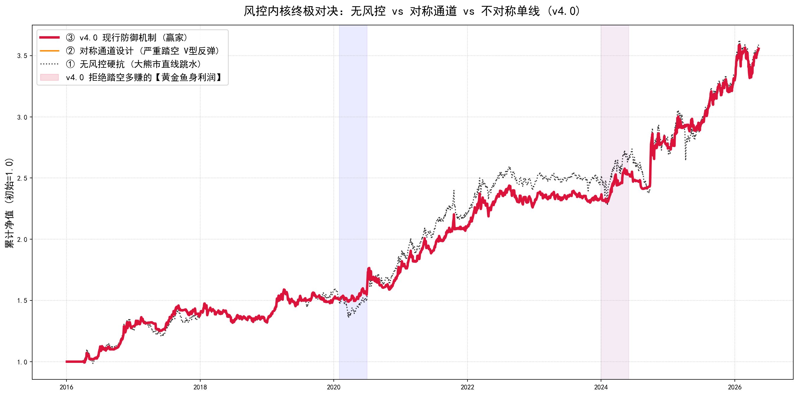
黄金能不能代替商品
黄金不能完全替代商品核。
纯黄金版本年化显著低于综合商品版本，说明商品核承担的是工业 Beta 和通胀弹性，不只是避险资产。
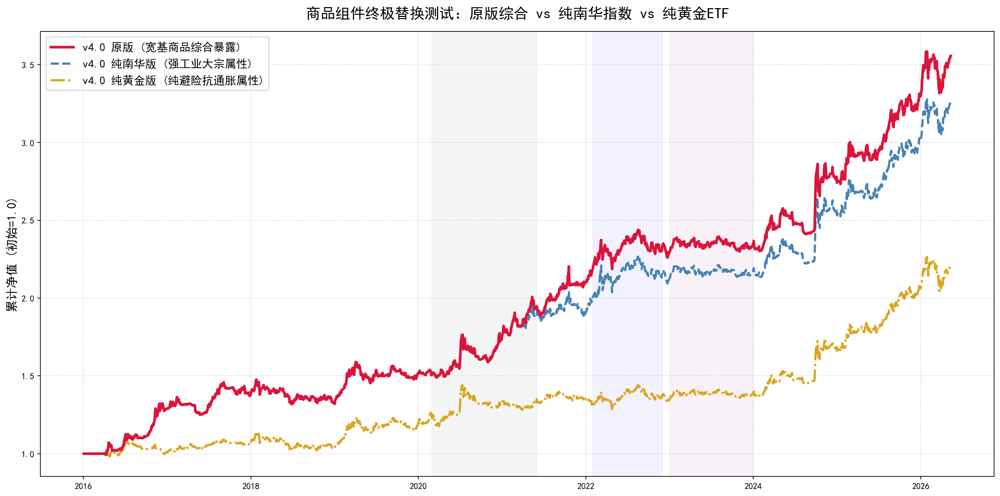
宽基能不能替代行业轮动
宽基 Beta 表现不弱，行业 Alpha 要谨慎看待。
宽基版本表现接近甚至部分区间更强，说明行业景气轮动有效，但不能忽视样本期、后验和可执行性问题。
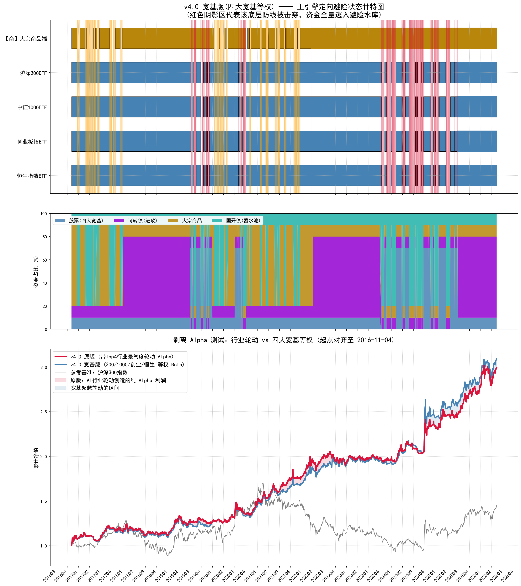
国开债水库久期测试
短债水库牺牲收益，但降低久期风险。
5-7 年长债水库收益更高，0-3 年短债水库更稳。这个测试明确了水库的收益和风险权衡。
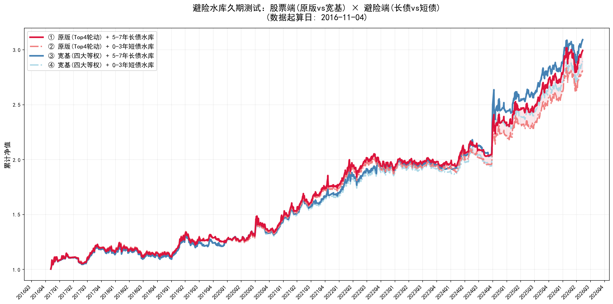
宽基 + 短债水库审计图
更偏稳健的替代路线也被保留下来。
宽基股票端加 0-3 年短债水库，是一个更重可执行性和利率风险控制的版本。
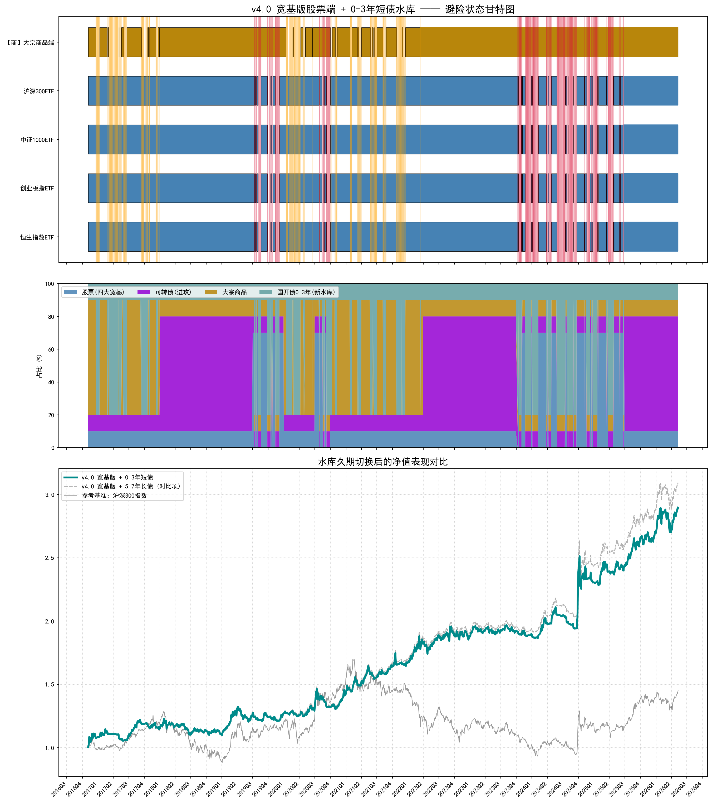
本地数据与木桶效应
实盘组合先解决共同起点问题。
所有 ETF 必须站在同一条时间轴上比较。组合以最晚具备有效数据的恒生科技 ETF 作为统一起点，避免用更长历史的资产抬高可比性。
| 资产 | 有效起始日 | 角色 |
|---|---|---|
| 沪深300ETF / 中证1000ETF / 创业板指ETF | 2019-12-31 | 股票核 |
| 恒生科技ETF | 2021-05-25 | 股票核短板 |
| 博时可转债ETF | 2020-04-07 | 转债核 |
| 商品 ETF 篮子 | 2019-12 至 2020-01 | 商品核 |
| 中欧纯债LOF | 2019-12-31 | 水库核 |
最终组合成果
研究最终收束成可执行的实盘四核版本。
股票核采用四大宽基 ETF 等权，商品核采用四只商品 ETF 等权，转债核用博时可转债 ETF，水库核用中欧纯债 LOF。
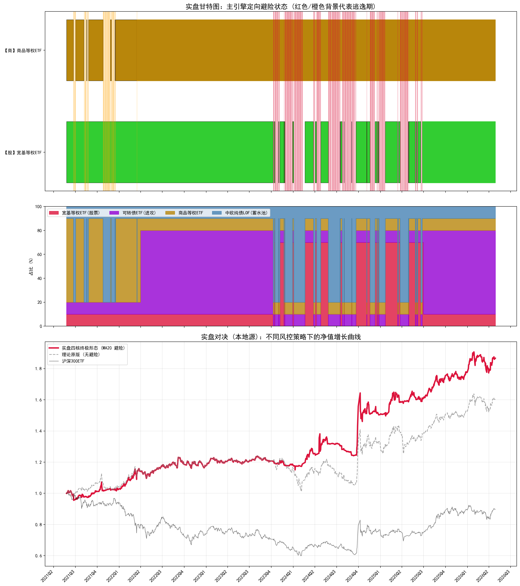
最终结果放在最后
四核版本不仅收益更高，收益风险比也更好。
关键绩效单独列示，目的是让收益、回撤、夏普和卡玛比率都能被直接比较，而不是只看一条净值曲线。
| 策略 | 年化 | 回撤 | 夏普 | 波动率 | 卡玛 |
|---|---|---|---|---|---|
| 沪深300ETF（大盘基准） | -2.25% | -40.38% | -0.24 | 17.68% | -0.06 |
| 理论原版（无避险满仓） | 10.47% | -18.40% | 0.58 | 14.48% | 0.57 |
| 实盘四核终极版（全入纯债底仓） | 14.07% | -11.15% | 0.88 | 13.68% | 1.26 |
调仓审计日志
最终组合不只是净值，还有可执行账单。
调仓日志记录宏观季度调仓、股端/商端 MA20 触发价、合成价格和最终仓位，让每一次仓位变化都有据可查。
| 开始日期 | 交易天数 | 触发逻辑 | 股端MA20 | 股合成价 |
|---|---|---|---|---|
| 2025-04-29 | 1 | 股端击穿 MA20，撤退至纯债 | 1.0996 | 1.0989 |
| 2025-04-30 | 16 | 股端收复 MA20，买回宽基 | 1.0963 | 1.1069 |
| 2025-06-19 | 4 | 股端击穿 MA20，撤退至纯债 | 1.1410 | 1.1227 |
| 2025-06-30 | 202 | 宏观季度调仓 | 不适用 | 1.1757 |
组合诞生的核心逻辑
风险结构比单个信号更重要。
三核模型解决收益来源，MA20 解决趋势破位识别，但真正让组合成型的是第四核：独立纯债水库。